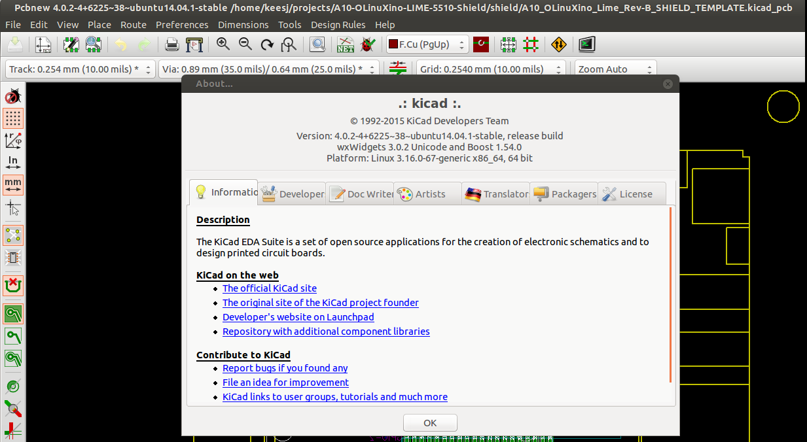

Hardware design¶
Hardware component selection¶
After finishing the prototype it was time to start production. This means to order components in larger quantities and create a PCB to fit the components.
The Initial run will be for 50 pieces but I first stelleld to order parts for 10 pieces and ended up only ordering 5 pieces.
The PCB design was to be done using KiCAD and using the shield template that was offered by Olimex on their website/git repo
Odering and choosing components.¶
Until now we designed something with the components we where able to find but we did not have enough for out own project. With 3d printing
Software tools.¶
The machine used during the design was a slightly oder laptop running ubuntu (LTS) (10.04) and I installed KiCAD from the PPA (the KiCAD version in ubuntu is outdated) the version can be seen here
KiCAD development goes quite fast and in general things improve for the better. On problem I encountered an other project is that KiCAD is not always very backward compatible this can be quite a challenge when Using other people’s code as I did for the shield. This time I was lucky.
The flow of KiCAD and finding out where options and path need to be configured remains a constant quest but you need to at least do the following:
- Use the library wizard to download files from the KiCAD github pages (the new library format with directory names that end with .pretty)
- Configure library path AND add libraries to your project to make it complete
- Possibly convert old libraries to the new format